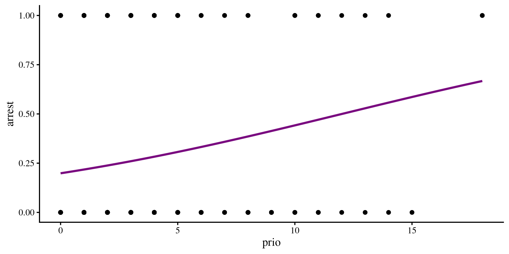

Lab 11: Logistic Regression
Fabio Setti
PSYC 6802 - Introduction to Psychology Statistics
Today’s Packages and Data 🤗
The caret package (Kuhn et al., 2024) is a package that focuses on streamlining the process of creating predictive models. It focuses on machine learning applications and we will use it to help us with logistic regression.
Predicting Recidivism: Linear Regression?
We think we can predict the arrest variable, whether an individual has been arrested within 1 year of being released from prison, by looking at the number of prior convictions, prio. We can run linear regression and get some results:
Call:
lm(formula = arrest ~ prio, data = dat)
Residuals:
Min 1Q Median 3Q Max
-0.5625 -0.2643 -0.2146 0.5369 0.8103
Coefficients:
Estimate Std. Error t value Pr(>|t|)
(Intercept) 0.189727 0.030126 6.298 7.47e-10 ***
prio 0.024855 0.007249 3.429 0.000665 ***
---
Signif. codes: 0 '***' 0.001 '**' 0.01 '*' 0.05 '.' 0.1 ' ' 1
Residual standard error: 0.4358 on 430 degrees of freedom
Multiple R-squared: 0.02661, Adjusted R-squared: 0.02435
F-statistic: 11.76 on 1 and 430 DF, p-value: 0.0006651However, arrest is a binary variable, where only 2 outcome are possible (0 = not arrested, 1 = arrested). Here are the counts:
Plotting the regression
There are multiple things that should jump out to you 🧐
- It does not take a statistics expert to guess that the residuals will not be normally distributed around the regression line.
- More importantly, the regression line will eventually make predictions that are outside the possible range of
arrestwhenprioincreases beyond a certain point.
The Logistic Function
In this case, one annoying features of linear regression is that its predictions can range from \(- \infty\) to \(+ \infty\) (not good ❌). What we really want is the probability of an individual being arrested given some other variables. Probabilities can only range between \(0\) and \(1\) (good ✅).
There are functions that always give values between 0 and 1, one of them being the logistic function:
\[y = \frac{e^x}{1 + e^x}\]
As you can see the line approaches \(0\) and \(1\) when \(x\) decreases/increases, but never becomes exactly 0 or 1.
The \(e\) is Euler’s number, equals roughly \(2.718\). We can get it in R by simply typing exp(1)
Logistic Regression
Now that we have our trusty logistic function we can run the exact same regression, but instead of the simple linear regression \(y = \beta_0 + \beta_1 \times x\), we stick the regression formula inside the logistic function, thus getting the logistic regression formula:
\[P(y = 1) = \frac{e^{\beta_0 + \beta_1 \times x}}{1 + e^{\beta_0 + \beta_1 \times x}}\]
notice that we are predicting \(P(y = 1)\), the probability that the DV = 1. In our case this is the probability of one of the individuals being arrested again within a year from release.
Another important point is that \(\beta_0\) and \(\beta_1\) are still the intercept and the slope respectively, but their interpretation is now different because the outcome is not just \(y\), but \(P(y = 1)\).
Link functions
The \(y = \frac{e^x}{1 + e^x}\) is also knowns as a link function. The idea of link functions is that your normal regression makes predictions between \(- \infty\) to \(+ \infty\), but you have data that cannot possible range between \(- \infty\) to \(+ \infty\). Link functions force the regression predictions within a certain range. Another example of a link function is the Poisson link used for Poisson regression, where you are looking at count data (e.g., predicting suicide attempts, which cannot be less than 0).
Logistic Regression in R
We use the glm() function (it stands for generalized linear model) to run a logistic regression in R. The syntax is almost identical to the lm() function.
Call:
glm(formula = arrest ~ prio, family = binomial, data = dat)
Coefficients:
Estimate Std. Error z value Pr(>|z|)
(Intercept) -1.39476 0.16180 -8.620 < 2e-16 ***
prio 0.11614 0.03557 3.265 0.00109 **
---
Signif. codes: 0 '***' 0.001 '**' 0.01 '*' 0.05 '.' 0.1 ' ' 1
(Dispersion parameter for binomial family taken to be 1)
Null deviance: 498.60 on 431 degrees of freedom
Residual deviance: 487.96 on 430 degrees of freedom
AIC: 491.96
Number of Fisher Scoring iterations: 4The family = "binomial" argument is what tells the glm() function that we want a logistic regression. Other types of regressions are possible with the glm() function (e.g., Poisson regression). The logistic regression formula is:
\[P(\mathrm{arrest} = 1) = \frac{e^{-1.39 + 0.12 \times \mathrm{Convictions}}}{1 + e^{-1.39 + 0.12 \times \mathrm{Convictions}}}\]
Odds again?? 😱
If for some reason you remember our discussion on odds in Lab 3 (ages ago by now), we looked at a formula to turn odds into probability. Let’s contrast it with the logistic function:
\[P = \frac{e^x}{1 + e^x}\]
\[P = \frac{\mathrm{odds}}{1 + \mathrm{odds}}\]
Ahh, they are are the exact same thing💡 Importantly, \(e^x = \mathrm{odds}\). So, in the previous slide, the \(e^{-1.39 + 0.12 \times \mathrm{Convictions}}\) part gives the odds of being arrested again given number of convictions at release.
so, the intercept, \(e^{-1.39} = .25\) is the odds of being rearrested 1 year after release, if the person was released has 0 additional convictions. We can also get the probability, which is \(\frac{e^{-1.39}}{1 + e^{-1.39}} = .2\).
The slope, \(0.12\), is the change in log odds (see next slide) per unit change in prio at release. In other words, the more convictions at release, the higher the odds of being arrested again.
“Log” Odds
The ever so slightly annoying thing is that you need to be a bit familiar with logarithms and exponents to interpret logistic regression. Logarithms are the inverse of exponents. For example:
so if \(e^x\) is the odds, then \(ln(e^x) = x\) is the log of the odds , or log odds as it is most commonly called. This is why in our logistic regression \(e^{-1.39 + 0.12 \times \mathrm{Convictions}}\), the slope \(0.12\) is the change in log odds per unit increase in convictions, not the change in odds.
Plotting a Logistic Regression
Depending on your data, the logistic regression line may look very similar or different compared to the linear regression line. In our case they look fairly similar:
where you need to add the method.args = list(family = "binomial") part to the geom_smooth() function to tell ggplot that you want a logistic regression line.

As you can see, the probability being arrested again (\(y\)-axis) increases with prior convictions. You can also see the line bending a bit, and although we don’t see it here, this line will always be between 0 and 1.
Making Predictions
We can use the fitted() function to get the predicted probability of being arrested again for each individual in our data.
Here is print the predicted probability for the first 5 individuals:
1 2 3 4 5
0.26 0.39 0.53 0.22 0.26 Logistic regression returns probabilities. But we don’t want probabilities, we need actual predictions to eventually evaluate how well our logistic regression predicts the data.
As our criterion to make prediction we say that if anyone has a predicted probability of being arrested above \(0.5\), we predict that they will be arrested again. Otherwise, we predict that they will not.
Out of the first 5 individuals, only the third individual had a probaiblity of being arrested above \(0.5\), so we predict that they will be arrested again.
Confusion Matrices and Accuracy
The start of all metrics that evaluate logistic regression predictions are what is called a confusion matrix. Confusion matrices are nothing more than the cross-tabulation of the predicted and observed outcomes:
True/False Positives and Negatives
You may have realized that something is a bit off about our logistic regression predictions. To understand why classification accuracy is not a great metric, we need to talk about true/false positives and negatives.
- sensitivity: the test’s ability to correctly detect the disease in individuals who do have the disease.
\[ \mathrm{sensitivity} = \frac{\mathrm{TP}}{\mathrm{TP} + \mathrm{FN}}\]
- specificity: the test’s ability to correctly categorize individuals as healthy if they do not have the disease.
\[ \mathrm{specificity} = \frac{\mathrm{TN}}{\mathrm{TN} + \mathrm{FP}}\]

Sensitivity/Specificity Trade-Off
Without needing to look at anything else, we see a bit of an issue. The logistic regression predicts pretty well who will not be arrested, but does a really poor job at predicting those who will be arrested!
anyone could get similar sensitivity and accuracy by always predictiong “no arrest” and they would do almost as well as the logistic regression 🤡
What is happening? The prediction almost always are “no arrest”. Prior convictions do increase the likelihood of being arrested again, but the effect is likely small, and even at 9 prior convictions, the probability of being arrested again is still below 0.5. Only a handful of individuals in the data have more than 9 prior convictions.
Adding Predictors
Our logistic regression is not doing very well. Can we add some predictors and see if we do any better? Let’s say that we think that age at release, age, will also impact the probability of being arrested again.
Call:
glm(formula = arrest ~ prio + age, family = binomial, data = dat)
Coefficients:
Estimate Std. Error z value Pr(>|z|)
(Intercept) 0.50218 0.56590 0.887 0.374865
prio 0.10465 0.03599 2.908 0.003637 **
age -0.07796 0.02303 -3.385 0.000711 ***
---
Signif. codes: 0 '***' 0.001 '**' 0.01 '*' 0.05 '.' 0.1 ' ' 1
(Dispersion parameter for binomial family taken to be 1)
Null deviance: 498.60 on 431 degrees of freedom
Residual deviance: 474.27 on 429 degrees of freedom
AIC: 480.27
Number of Fisher Scoring iterations: 4we add an additional variable in the same way that we would with lm(). The idea is similar to multiple regression and the interpretations are similar:
- \(0.5\) the log-odds of being arrested again when both
ageandprioare 0.
- \(0.10\) the change in log-odds of being arrested for every additional conviction at release, accounting for
age.
- \(- 0.8\) the change in log-odds of being arrested for every additional years of age at release, accounting for previous convictions.
Statistical Model Comparison
We just added age as an additional predictor. We would like to know whether we now do a better job at predicting the DV arrest. In the case of logistic regrerssion we can use the likelihood-ratio test (LRT) to test whether adding age produces a significant improvement in predictions. That is, we compare the Logistic regression with only prio to the one with prio + age.
For reasons that are beyond human understanding, the R developers decided that you run the likelihood-ratio test with the anova() function.
You include the two logistic regression objects that you want to compare. If the p-value is significant, it means that the model with more predictors is best (statistically).
Note that this is something that we have touched on briefly in Lab 3. Regardless, the LRT does not quantify how much adding age as a DV improves our predictions.
Are we actually doing better now?
How well are we actrually doing now that we have included age as a predictor? We can get predictions with the new logistic regression and look at the confusion matrix again.
We are doing a tiny bit better, but still pretty poorly overall. Both prio and age are somewhat predictive of arrest, but we still do a bad job at identifying individuals who will be arrested again 😔
Training and Test Partitions
We are going to talk about something that is more common in the field of machine learning, where the most important goal is not understanding the nature of the relation between variables, but to get the best possible predictions.
The idea is that we are interested in seeing how well our model predicts data that it has not seen yet, not the data it has already seen 🧐 This is because we want the model to generalize well when it encounters new data!
To test how well our regression does when we try to predict new data, we can split our data into a training and test partition. the caret package has a function for it:
createFolds() takes in a vector of numbers, which is 1:nrow(dat) in this case, and randomly splits it into some sets k = (only 2 in this case). createFolds() will return a list containing the numbers assigned to each fold.
1:nrow(dat) will correspond to every row in our data, which will be randomly split in two folds. We can then subset the data by selecting the rows corresponding to the values in each fold.
Predicting new Data
Now we can run the same logistic regression on the training partition, dat_train, and check how well we can predict new data, dat_test.
Then, we get the predictions on new data that the regression above has not been “trained on”. To get predictions for new data in R we generally use the predict() function:
Note that you must include the type = "response" argument such that the predictions are returned as probabilities. Then we can turn the probabilities into actual predictions as we did before.
Now we can test how well we do on the “test” data. (spoiler: if we did not do well on the full data, we will not do well when we split the data)
Performance on Test Data
We go through the same process where we create the confusion matrix and calculate accuracy, sensitivity and specificity.
0 1
P_Arrest 6 5
P_NoArrest 155 50And once again we are doing really poorly at predicting which individuals will be arrested.
Is our logistic regression model useless? Probably not great, but not useless. If you are a psychologist, at least you established that having more convictions increases chances of arrest, and being older decreases them. If you are interested in predictions alone, you are not very happy 🤷
References
Kuhn, M., cre, Wing, J., Weston, S., Williams, A., Keefer, C., Engelhardt, A., Cooper, T., Mayer, Z., Kenkel, B., Team, R. C., Benesty, M., Lescarbeau, R., Ziem, A., Scrucca, L., Tang, Y., Candan, C., & Hunt, T. (2024). Caret: Classification and Regression Training.
Rossi, P. H., Berk, R. A., & Lenihan, K. J. (Eds.). (1980). Money, Work, and Crime Experimental Evidence. In Money, Work, and Crime (p. iii). Academic Press. https://doi.org/10.1016/B978-0-12-598240-5.50001-6
PSYC 6802 - Lab 11: Logistic Regression